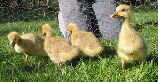
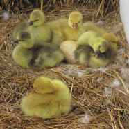

| Goslings I bought my first geese, American Buff, as day-old goslings from a hatchery. The goslings ate a lot of grass cut in tiny pieces, loved the water and grew very fast. |
||||||||||||||||||||
|  | ||||||||||||||||||||
| When the weather was warm and dry, I brought the goslings outside to eat grass and run around. They are covered with down and need to stay dry until they grow feathers. A mother goose would warm them under her feathers. The goslings develop feathers between five to eight weeks. | ||||||||||||||||||||
|
Goslings eat a lot and grow very large. These are three months old.
|
||||||||||||||||||||
|  | ||||||||||||||||||||
| Geese are devoted mothers. Ganders protect the goose and goslings. Geese lay eggs every other day from March to June. For hatching, a goose will collect between six and twelve eggs in a nest. She lines the nest with down from her breast. The goose sits on her eggs, incubating them for 28 days. If you put an egg ready to hatch to your ear, you can hear the gosling make chirping sounds. |
||||||||||||||||||||
| These geese chose a quiet spot to nest in the sheep shelter. | ||||||||||||||||||||
| Goslings are hatched ready-to-go. They are out of the nest as soon as all the goslings are hatched and begin grazing right away. | ||||||||||||||||||||
| I have seen geese take three-day old goslings on a hike across the pasture where the grass was over their heads. One goose brought her small goslings to the pond. She put them under some plants at the edge of the pond and then went for a swim. |
||||||||||||||||||||
| Older Goslings | ||||||||||||||||||||